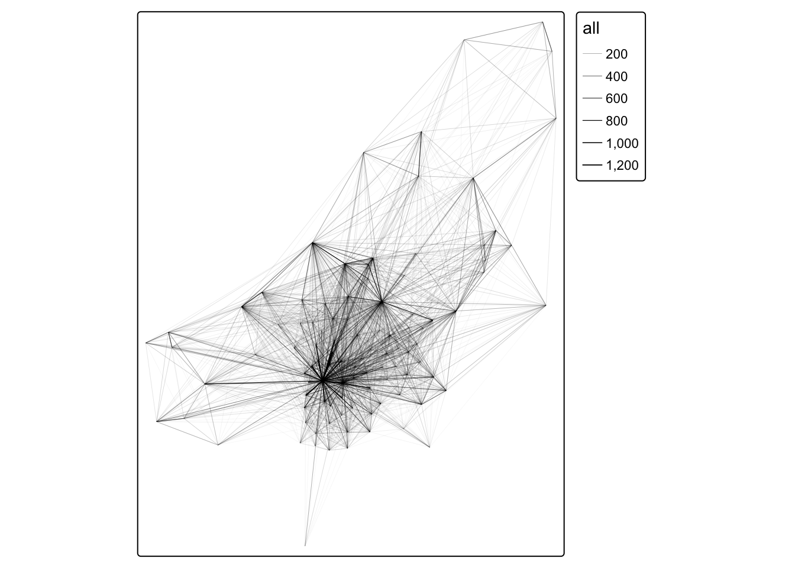
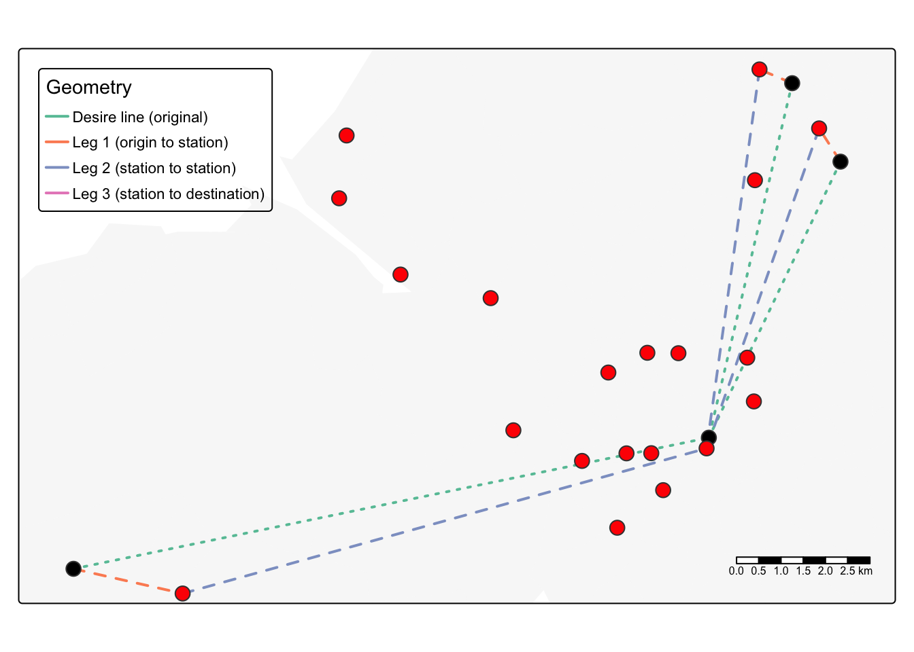

Linking to GEOS 3.11.0, GDAL 3.5.3, PROJ 9.1.0; sf_use_s2() is TRUE
library(dplyr)
Attaching package: 'dplyr'
The following objects are masked from 'package:stats':
filter, lag
The following objects are masked from 'package:base':
intersect, setdiff, setequal, union
library(spDataLarge)library(stplanr) # for processing geographic transport datalibrary(tmap) # map-making (see Chapter 9)library(ggplot2) # data visualization packagelibrary(sfnetworks)library(tidyverse)
── Conflicts ────────────────────────────────────────── tidyverse_conflicts() ──
✖ dplyr::filter() masks stats::filter()
✖ dplyr::lag() masks stats::lag()
ℹ Use the conflicted package (<http://conflicted.r-lib.org/>) to force all conflicts to become errors
library(osmextract)
Data (c) OpenStreetMap contributors, ODbL 1.0. https://www.openstreetmap.org/copyright.
Check the package website, https://docs.ropensci.org/osmextract/, for more details.
library(sf)library(dplyr)library(spDataLarge)library(stplanr) # for processing geographic transport datalibrary(tmap) # map-making (see Chapter 9)library(ggplot2) # data visualization packagelibrary(sfnetworks) library(nabor)
Introduction
Models are designed to tackle a particular problem, this chapter focuses on increasing cycling in the city of Bristol. These transport problems are closely linked to other sectors, for example increased cycling brings about an increased demand for shops that sell bikes.
Bristol has a relatively active population, but still has problems such as congestion and air quality which could be improved upon by increased cycling. This chapter aims to show how geocomputation can be used provide the evidence that transport planners & stakeholders require to implement new, more sustainable transport systems.
13.3 Transport Zones
Defining a study area comes with problems; the study area defined by OpenStreetMap (OSM) might not be the official boundary used by authorities, or the official boundary may be inappropriate for transport research.
The following code defines a study area for this project using OSM:
Travel to Work Areas (TTWAs) address these issues. In this chapter these are defined by zones in which 75% of the people within travel to work - in Bristol’s case this is much larger than the city bounds using OSM.
The origin and destination zones used here are the same, regions of intermediate geographical resolution with around 8,000 households in each - meaning the zones are smaller in more densely populated regions.
The zones for Bristol are stored in bristol_zones in the spDataLarge package, with the following attributes:
bristol_zones
Simple feature collection with 102 features and 2 fields
Geometry type: MULTIPOLYGON
Dimension: XY
Bounding box: xmin: -2.845847 ymin: 51.28248 xmax: -2.252388 ymax: 51.73982
Geodetic CRS: WGS 84
First 10 features:
geo_code name geometry
2905 E02002985 Bath and North East Somerset 001 MULTIPOLYGON (((-2.510462 5...
2907 E02002987 Bath and North East Somerset 003 MULTIPOLYGON (((-2.476122 5...
2925 E02003005 Bath and North East Somerset 021 MULTIPOLYGON (((-2.55073 51...
2932 E02003012 Bristol 001 MULTIPOLYGON (((-2.595763 5...
2933 E02003013 Bristol 002 MULTIPOLYGON (((-2.593783 5...
2934 E02003014 Bristol 003 MULTIPOLYGON (((-2.639581 5...
2935 E02003015 Bristol 004 MULTIPOLYGON (((-2.584973 5...
2936 E02003016 Bristol 005 MULTIPOLYGON (((-2.565948 5...
2937 E02003017 Bristol 006 MULTIPOLYGON (((-2.616485 5...
2938 E02003018 Bristol 007 MULTIPOLYGON (((-2.637681 5...
names(bristol_zones)
[1] "geo_code" "name" "geometry"
We can now add travel data to this zone data: bristol_od is an OD dataset on travel to work between zones from the UK’s 2011 Census. It shows information on travel between the origin (column ‘o’) and the destination (column ‘d’). Note however that bristol_od has more rows than bristol_zones since it is showcasing travel between zones, not just the zones themselves.
nrow(bristol_od)
[1] 2910
nrow(bristol_zones)
[1] 102
We will need format the larger data frame into a smaller one to join the two together, to do this we will group the trips by their origin zone.
Desire lines are lines between origins and destinations representing where people desire to go. They are the quickest route between two places (i.e as the crow flies). In this section the desire lines will start and end in the geographic centroids of the origin and destination zones.
od_top5 = bristol_od |>slice_max(all, n =5)
Since bristol_od already has travel data we can order the origin-destination pairs by the amount of people travelling between them, and select the top 5.
Note: same destination (Bristol city center) for all the pairs, and walking as the most popular mode of transport for all pairs.
The code above adds a column showing the proportion of the trips in each pair made by walking or cycling (active modes of transport). To show the desire lines that need improvement the most.
od_intra =filter(bristol_od, o == d)od_inter =filter(bristol_od, o != d)
This code has split bristol_od into intrazonal (within the same zone) and interzonal (between different zones) OD pairs.
Now we can create desire lines using interzonal pairs and plot them on a map with the stplanr function od2line()
desire_lines =od2line(od_inter, zones_od)
Creating centroids representing desire line start and end points.
[v3->v4] `qtm()`: use `lwd` instead of `lines.lwd`.

Note the smaller sub-centers outside the actual city center.
13.5. Nodes
There are two main types on transport nodes: Nodes not directly on the network such as zone centroids, houses and workplaces, or nodes that are special kinds of vertex such as intersections, or points for entering / exiting the network such as train stations.
Public transport stops are particularly important nodes and can help to make longer journeys more manageable for walkers and cyclists. These journeys can be split into: origin leg - house to public transport, public transport leg and destination leg - public transport to destination.
The first stage is to identify the desire lines with most public transport travel, which in our case is easy because our previously created dataset desire_lines already contains a variable describing the number of trips by train.
desire_rail =top_n(desire_lines, n =3, wt = train)
We want to split these desire lines into 3 parts representing the 3 legs, to do this we can use line_via(), a stplanr function.
[cols4all] color palettes: use palettes from the R package cols4all. Run
`cols4all::c4a_gui()` to explore them. The old palette name "Set2" is named
"brewer.set2"
Multiple palettes called "set2" found: "brewer.set2", "hcl.set2". The first one, "brewer.set2", is returned.

13.6. Routes
Routes are just desire lines that are no longer straight, and their geometries are typically determined by the transport network in the region.
They are usually generated from matrices that contain co-ordinate pairs making up desire lines.
This routing process is done by routing engines: software and web services that return geometries and attributes describing how to get from origins to destinations.
Note: a-lot of uncovered information here on specific routing engines.
13.6.6. Routing example
To show an example of routing we will focus on a subset of desire lines that are highly relevant to the policies we are trying to implement. To do this we will filter the desire lines into the ones that have many (100+) trips of between 2.5 and 5km, a good distance to cycle instead of drive.